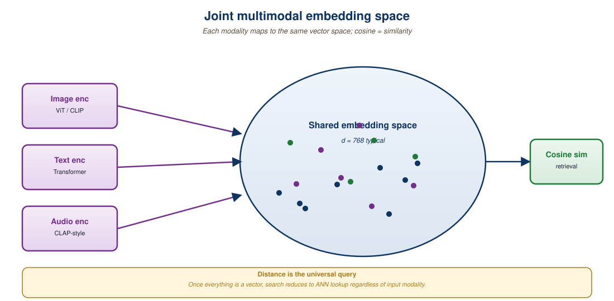

"Two encoders that agree on the same point in latent space have implicitly written a translation dictionary."
RAG, Cross-Modal-Curious AI Agent
A joint embedding space maps every modality, text, image, audio, video, into the same vector space so that semantically related items end up near each other. CLIP set the template for text and image; ImageBind extended it to six modalities; SigLIP improved the contrastive objective; LanguageBind and 4M extended it further. Once you have a joint space, retrieval becomes a single nearest-neighbor query: text-to-image, image-to-text, audio-to-image, anything-to-anything. This section walks through the contrastive training that produces these spaces, the late-fusion architecture that makes them efficient, and the practical concerns (dimensionality, normalization, hubness) that determine retrieval quality.
Prerequisites
This section builds on the embedding fundamentals from Section 31.1 and the vision-language patterns from Section 31.1. Familiarity with Section 37.2 (early vs late fusion) helps situate why joint embedding spaces are late-fusion by design.

33.1.1 The Contrastive Recipe
The standard contrastive objective trains two encoders (one per modality) to produce similar embeddings for matched pairs and dissimilar embeddings for mismatched pairs. For a batch of $N$ text-image pairs $(t_i, x_i)$:
$$ \mathcal{L} = -\frac{1}{2N}\sum_{i=1}^N \log\frac{\exp(\langle f(t_i), g(x_i)\rangle/\tau)}{\sum_{j=1}^N \exp(\langle f(t_i), g(x_j)\rangle/\tau)} - \frac{1}{2N}\sum_{i=1}^N \log\frac{\exp(\langle g(x_i), f(t_i)\rangle/\tau)}{\sum_{j=1}^N \exp(\langle g(x_i), f(t_j)\rangle/\tau)} $$
where $f, g$ are the text and image encoders, $\langle \cdot, \cdot \rangle$ is dot product on normalized vectors, and $\tau$ is a learnable temperature. The two summands are the InfoNCE losses in each direction (text-to-image and image-to-text); their average is the symmetric CLIP loss.
The training pattern is the same as the contrastive embedding training from Section 31.1, with two distinctions:
- Cross-modal positive pairs: instead of paraphrased text pairs, the positives are (text, image) pairs scraped from the web (alt text, captions, surrounding HTML).
- Hard negatives by construction: every other item in the batch is a negative; large batches (16k+) provide enough hard negatives to push apart subtly different concepts.
33.1.2 CLIP and Its Direct Successors
CLIP (Radford et al., 2021) was the breakthrough. The original paper trained on 400M (image, alt-text) pairs scraped from the web with a ViT-L/14 image encoder and a 63M-parameter text transformer. The result: an embedding space where text-to-image retrieval, zero-shot image classification, and image-to-text similarity all worked without task-specific fine-tuning.
The 2024-2026 successors improve on three axes:
- SigLIP (Zhai et al., 2023): replaces the softmax-over-batch InfoNCE with a per-pair sigmoid loss. Removes the dependency on global batch normalization, allowing smaller-batch training and better scaling.
- EVA-CLIP (Sun et al., 2023): bigger image encoder (1B to 18B parameters) and better masked-image-modeling initialization. Improved zero-shot ImageNet accuracy by 4 to 6 points.
- OpenCLIP / MetaCLIP: open-source CLIP reproductions on larger, better-curated datasets (DataComp, MetaCLIP-1B).
- SigLIP 2 (Zhai et al., 2025): adds NaFlex (native flexible resolution), Locca caption regularization, and dense decoder probes. Now the open-source default in 2026.
# SigLIP 2 inference: encode a text query and a set of images,
# then rank by cosine similarity for retrieval.
from transformers import AutoProcessor, AutoModel
import torch, torch.nn.functional as F
MODEL_ID = "google/siglip2-base-patch16-naflex"
model = AutoModel.from_pretrained(MODEL_ID).cuda().eval()
proc = AutoProcessor.from_pretrained(MODEL_ID)
def encode_text(queries):
batch = proc(text=queries, return_tensors="pt",
padding=True).to("cuda")
with torch.inference_mode():
emb = model.get_text_features(**batch)
return F.normalize(emb, dim=-1)
def encode_images(paths):
images = [Image.open(p) for p in paths]
batch = proc(images=images, return_tensors="pt").to("cuda")
with torch.inference_mode():
emb = model.get_image_features(**batch)
return F.normalize(emb, dim=-1)
# Retrieve top-5 images for a query
q = encode_text(["a dog wearing sunglasses"])
img_embs = encode_images(all_image_paths)
scores = (q @ img_embs.T).squeeze()
top5 = scores.topk(5)
for i, idx in enumerate(top5.indices):
print(f"#{i+1} {all_image_paths[idx]} score {top5.values[i]:.3f}")img_embs into a vector database (FAISS, Qdrant, Pinecone) and query with q.33.1.3 ImageBind and Beyond: Six Modalities
ImageBind (Girdhar et al., 2023) extended the joint embedding idea to six modalities: image, text, audio, depth, thermal, IMU (inertial). The key insight: you don't need pairs of every modality combination. As long as each modality is paired with images, the joint space self-organizes through the image hub.
This "image-centered" training is parameter-efficient. ImageBind freezes a pretrained CLIP image encoder and trains each new modality's encoder to align with the CLIP image space. After training:
- Audio-to-text retrieval works (via the shared space).
- Audio-to-depth retrieval works.
- Image-to-audio retrieval works.
None of these pairs ever appeared in the training data directly; the alignment is transitive through the image hub. This is the same trick that powers cross-lingual word embeddings via a pivot language.
| Model | Year | Modalities | Dimensionality | Notable Feature |
|---|---|---|---|---|
| CLIP (ViT-L/14) | 2021 | text, image | 768 | The original; still useful baseline |
| OpenCLIP (ViT-bigG) | 2023 | text, image | 1280 | Open reproduction at frontier scale |
| SigLIP | 2023 | text, image | 768 | Sigmoid loss, smaller batch friendly |
| EVA-CLIP-18B | 2024 | text, image | 1024 | Frontier zero-shot ImageNet |
| ImageBind | 2023 | image, text, audio, depth, thermal, IMU | 1024 | Six modalities via image hub |
| LanguageBind | 2024 | text, image, audio, video, depth, thermal | 768 | Language hub instead of image hub |
| 4M-21 | 2024 | 21 modalities | variable | Encoder-decoder, not just encoder |
| SigLIP 2 | 2025 | text, image | 768/1152 | NaFlex resolution, Locca caption |
| CLAP | 2023 | text, audio | 512 | Audio-specific CLIP analog |
33.1.4 Late Fusion by Design
Joint embedding models are late-fusion by design (see Section 37.2). The modalities meet only at the final embedding, with no shared transformer layers. This has two consequences:
- Efficiency at scale: pre-compute image embeddings once; only the text query is encoded at query time. With $N$ images and $M$ queries, you do $N$ image encodes plus $M$ text encodes plus $NM$ dot products (trivially fast).
- Reasoning limits: the model cannot reason jointly about modalities; it can only match them at the embedding level. Asking "what unusual object is in this picture?" cannot be answered by a CLIP-style model; that needs a multimodal LLM.
The right mental model: joint embedding models are for retrieval, not for understanding. They are the first stage of a two-stage pipeline where a downstream multimodal LLM does the reasoning. Section 33.2 covers exactly this pattern.
One of CLIP's killer features is the asymmetry between indexing and querying. Indexing 100M images is a one-time GPU job that costs maybe \$5,000 and produces ~300 GB of float embeddings. Querying is O(d) per item per query, easily handled by an approximate nearest-neighbor index. This is why CLIP-style retrieval scales to web-scale image search. A multimodal LLM that processes the full image at every query would be 1000x more expensive per query.
33.1.5 Practical Considerations
Several engineering details determine whether your joint embedding retrieval actually works in production:
- L2 normalization: always normalize embeddings to unit norm. Without this, cosine similarity and dot product diverge, and ANN indices give wrong results.
- Dimensionality vs accuracy: 512-dim and 768-dim are the sweet spot. Above 1024 you pay storage and ANN cost with marginal accuracy gains. Matryoshka representation learning (MRL) lets you truncate to fewer dimensions at inference for a quality/cost trade-off.
- Domain mismatch: CLIP's training data was internet-scraped, so it knows celebrities and cats well but struggles with medical imagery, technical drawings, or aerial photography. Fine-tune or use a domain-specific variant.
- The hubness problem: in high-dimensional spaces, a few "hub" points appear as nearest neighbors for many queries. Normalize embedding magnitudes carefully and consider hubness-aware reranking.
- Modality gap: text and image embeddings in CLIP do not fully overlap; they occupy slightly different regions of the unit sphere. This is observable as a systematic bias in cross-modal retrieval. Mitigations include centering or adding a learned offset.
CLIP's text encoder was trained on alt-text and image captions, which are linguistically narrow (typical caption length: 5 to 15 words). Long queries ("a smiling brown labrador retriever wearing a red collar sitting on green grass next to a wooden bench in a city park") underperform short queries ("dog on bench") because the long version pushes the text embedding into a region the model rarely saw during training. For production retrieval, train users (or your application layer) to issue short visual queries, or use an LLM to compress long queries before encoding.
33.1.6 Vector Database Integration
Joint embeddings are the input to a vector database, the same infrastructure covered in Chapter 31. The choices in 2026:
- FAISS: in-process library; best for embedded use cases up to 10s of millions of vectors.
- Qdrant: open-source self-hosted vector database with filtering and metadata support.
- Pinecone, Weaviate: hosted vector databases; production-ready out of the box.
- Vespa, Milvus: large-scale (billions of vectors) systems with advanced filtering.
- pgvector: Postgres extension; convenient when you already have a Postgres database.
For cross-modal RAG, the vector database must support storing metadata alongside vectors (modality type, source URL, timestamp, language) so the application can filter retrievals. Most modern vector databases handle this; FAISS does not natively.
A 2025 art marketplace had 12 million artwork photos. They needed visual search ("artworks like this one"), reverse search ("which of our artworks is this Instagram screenshot?"), and text search ("oil paintings of seascapes in blue tones"). Their stack: SigLIP 2 for embeddings (768-dim), Qdrant for vector storage, a thin FastAPI service for query handling. Indexing cost: ~\$8,000 in one-time GPU compute. Query latency: 40 ms p95 for top-50 retrieval. The visual search drove a 14% lift in browse-to-purchase conversion.
Joint embedding spaces enable efficient cross-modal retrieval by mapping every modality into a shared vector space. CLIP started the lineage; SigLIP and SigLIP 2 are the open-source defaults in 2026; ImageBind and LanguageBind extend to six or more modalities. The architecture is late-fusion by design: efficient at scale but limited to matching, not reasoning. Pair with a vector database and a downstream multimodal LLM for full cross-modal RAG, covered in Section 33.2.
- Why does ImageBind work with image-anchored pairs even though many target retrievals (e.g., audio-to-depth) never appear in training?
- You observe that long descriptive text queries underperform short ones on CLIP-based retrieval. What is the root cause, and what application-layer mitigation can you implement?
- The "modality gap" between CLIP's text and image embeddings is a known issue. Describe it and one mitigation.
- Sketch why a joint-embedding model alone cannot answer "is this person in the photo wearing prescription glasses or sunglasses?" but a downstream VLM can.
What Comes Next
Section 33.2: Multimodal RAG uses these joint embedding spaces as the first stage of a retrieval-augmented-generation pipeline for image, audio, and video contexts.